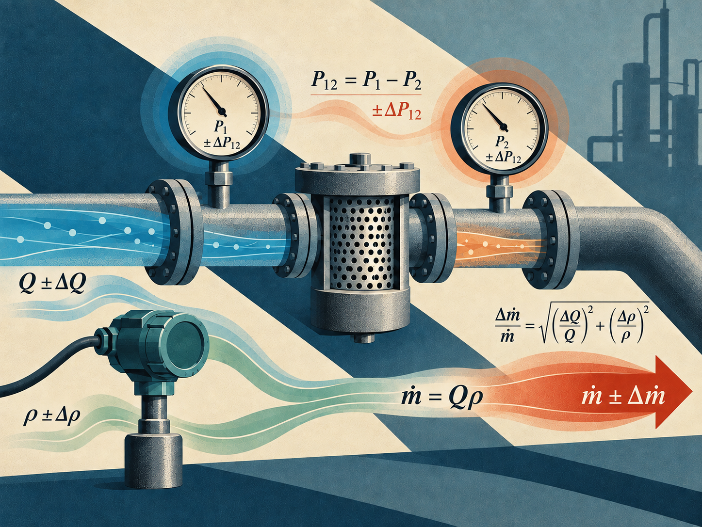

Instrumentación industrial
Propagación de errores en instrumentación
Cómo se combinan las incertidumbres al calcular una magnitud a partir de mediciones inciertas
La incertidumbre de una medición no desaparece al introducir su valor en una fórmula, sino que se transmite al resultado calculado. Este artículo presenta la base matemática de esa propagación y las reglas prácticas para sumas, restas, productos, cocientes y potencias. A través de dos aplicaciones industriales, la caída de presión en un filtro y el cálculo del flujo másico de un gas, se muestra cómo obtener la incertidumbre final y cómo interpretar su importancia al evaluar un proceso.
Introducción
En la instrumentación industrial, ninguna medición es absolutamente exacta. Cada sensor, transmisor o indicador aporta incertidumbre debido a factores como su calibración, resolución, tolerancias de fabricación y condiciones ambientales. Una lectura de presión, temperatura o caudal debe entenderse junto con la incertidumbre que la acompaña.
Muchas variables de interés no se miden directamente, sino que se calculan combinando otras mediciones. Es el caso de la caída de presión en un filtro, obtenida por diferencia entre dos presiones, o del flujo másico de un gas, calculado a partir del caudal volumétrico y la densidad. Las incertidumbres de las entradas se propagan al resultado mediante esa relación matemática. Evaluarlas ayuda a fundamentar decisiones de operación, seguridad, eficiencia y control de calidad.

Aunque el tema suele llamarse propagación de errores, conviene distinguir entre el error de una medición y la incertidumbre asociada a ella. Aquí calcularemos incertidumbres, siguiendo el enfoque de combinación descrito por el NIST (2023). Usaremos $u(X)$ para la incertidumbre estándar de $X$ y reservaremos $\Delta X$ para diferencias físicas en la variable $X$.
La base matemática
Supongamos que una magnitud $Z$ depende de dos mediciones $X$ e $Y$:
Si las entradas no están correlacionadas y una aproximación lineal de la función es adecuada, sus incertidumbres estándar se combinan mediante la raíz de la suma de los cuadrados, conocida como RSS por sus siglas en inglés. La expresión se obtiene a partir de una expansión de Taylor de primer orden:
Las derivadas parciales se evalúan en los valores medidos y actúan como coeficientes de sensibilidad porque indican cuánto cambia el resultado al variar cada entrada. Por eso no basta con sumar las incertidumbres de los instrumentos; primero hay que considerar cómo intervienen en el cálculo.
En los ejemplos siguientes se supone que las incertidumbres indicadas ya están expresadas como incertidumbres estándar y que las entradas son independientes.
Reglas prácticas
Sumas y restas: combinar incertidumbres absolutas
Cuando $Z=X+Y$ o $Z=X-Y$, los coeficientes de sensibilidad tienen magnitud uno. En ambos casos:
Las incertidumbres deben expresarse en unidades compatibles con las magnitudes que se suman o restan. Restar dos lecturas no significa restar sus incertidumbres: bajo el supuesto de independencia, las contribuciones se combinan en cuadratura.
Productos y cocientes: combinar incertidumbres relativas
Para $Z=XY$ o $Z=X/Y$, resulta más cómodo trabajar con incertidumbres relativas:
Estas razones son adimensionales y pueden expresarse como fracciones o porcentajes, siempre de forma consistente. La forma relativa requiere valores nominales distintos de cero.
Potencias: considerar el exponente
Si $Z=X^n$, con $n$ constante y sin incertidumbre, la regla de primer orden es:
Así, elevar una medición al cuadrado duplica aproximadamente su incertidumbre relativa. El valor absoluto del exponente permite aplicar la misma expresión a potencias negativas, dentro del dominio de la función.
Ejemplo 1: caída de presión en un filtro
Para monitorear la obstrucción de un filtro en una tubería de agua se instalan dos manómetros analógicos: uno antes del filtro, que mide $P_1$, y otro después, que mide $P_2$. La caída de presión se obtiene mediante una resta:
- Presión de entrada: $P_1=150\,\mathrm{kPa}$, con $u(P_1)=3\,\mathrm{kPa}$.
- Presión de salida: $P_2=120\,\mathrm{kPa}$, con $u(P_2)=2\,\mathrm{kPa}$.
El valor nominal de la caída de presión es:
Como se trata de una diferencia entre entradas independientes, combinamos las incertidumbres absolutas:
Redondeando la incertidumbre a dos cifras significativas y el valor nominal a la misma posición decimal, podemos expresar el resultado como:
La incertidumbre absoluta resultante es mayor que la de cualquiera de los dos instrumentos por separado. Además, representa aproximadamente un 12% de la caída de presión calculada, aunque las incertidumbres relativas de las lecturas originales son de solo 2% y 1.67%. Esto ilustra una dificultad importante: al restar dos valores próximos, la diferencia puede tener una incertidumbre relativa elevada.
Ejemplo 2: flujo másico de un gas
Un sistema de control calcula el flujo másico de un gas, $\dot m$, multiplicando el caudal volumétrico $Q$ y la densidad $\rho$ medidas por dos instrumentos separados:
La magnitud medida en $\mathrm{m^3/h}$ es un caudal volumétrico, no un volumen. La densidad debe corresponder a las mismas condiciones de presión y temperatura a las que está referido ese caudal.
- Caudal volumétrico: $Q=50\,\mathrm{m^3/h}$, con incertidumbre relativa de 1.5%, equivalente a $u(Q)=0.75\,\mathrm{m^3/h}$.
- Densidad: $\rho=1.2\,\mathrm{kg/m^3}$, con incertidumbre relativa de 2.0%, equivalente a $u(\rho)=0.024\,\mathrm{kg/m^3}$.
El flujo másico nominal es:
Para el producto combinamos las incertidumbres relativas. Escritas como fracciones:
Para recuperar la incertidumbre absoluta, multiplicamos esa fracción por el valor nominal:
Por lo tanto, el resultado es:
La incertidumbre relativa combinada es de 2.5%. No es la suma aritmética de 1.5% y 2.0%, sino su combinación en cuadratura, bajo los supuestos indicados.
Resumen de fórmulas
Las siguientes expresiones corresponden a entradas no correlacionadas. En productos, cocientes y potencias se utiliza la aproximación de primer orden; las formas relativas requieren denominadores distintos de cero.
Antes de aplicar las fórmulas
- Identifica qué expresa la especificación. Una tolerancia máxima o una incertidumbre expandida no equivale automáticamente a una incertidumbre estándar.
- Revisa la correlación. Si las entradas comparten fuentes de incertidumbre, deben considerarse términos de covarianza.
- Evalúa la aproximación. Una función muy no lineal o incertidumbres grandes pueden requerir otro método de propagación.
- Explica el resultado. Aquí el símbolo $\pm$ acompaña a una incertidumbre estándar: no representa un error máximo garantizado ni, por sí solo, un intervalo del 95%.
Conclusiones
Calcular una variable indirecta exige evaluar tanto su valor nominal como la incertidumbre que recibe de las mediciones de entrada. En sumas y restas se combinan incertidumbres absolutas; en productos y cocientes, relativas; y en potencias interviene la magnitud del exponente.
Los ejemplos muestran por qué esta evaluación importa en la práctica: una caída de presión de $30\,\mathrm{kPa}$ puede tener una incertidumbre relativa cercana al 12%, mientras un flujo másico de $60\,\mathrm{kg/h}$ resulta con una incertidumbre de $1.5\,\mathrm{kg/h}$. La calidad del resultado depende tanto de los instrumentos como de la operación matemática que los relaciona.
Referencias
- National Institute of Standards and Technology. (2023, 1 de marzo). NIST TN 1297: 5. Combined standard uncertainty.